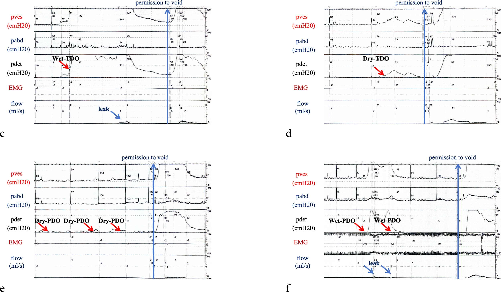

Página 9 · A régua da pressão de perda
PPE: a régua que separa hipermobilidade de defeito esfincteriano
Dois números separam a paciente que perde a um espirro daquela que só perde com grande esforço.
A PPE separa a incontinência de esforço em duas falhas do suporte
O traçado permite fazer uma medida a mais na incontinência de esforço: a pressão de perda ao esforço (PPE) — em inglês, VLPP. Com ela, separa-se a incontinência de esforço em hipermobilidade do colo vesical × defeito esfincteriano, conforme a força necessária para a paciente perder. A lógica é intuitiva: quem perde com pouca pressão tem um esfíncter que mal fecha; quem só perde com muita pressão tem o esfíncter mais competente, e o problema é de sustentação.
> 90 cmH₂O = hipermobilidade do colo vesical (perde com grande esforço)
Quando a PPE é acima de 90 cmH₂O, o diagnóstico é hipermobilidade do colo vesical — a paciente só perde com um grande esforço. Foi preciso muita pressão para vencer o suporte, o que significa que o esfíncter em si está razoavelmente competente; o que falha é a sustentação anatômica do colo. É o extremo “resistente” da escala.
< 60 cmH₂O = defeito esfincteriano (perde aos mínimos esforços)
No outro extremo, quando a PPE é abaixo de 60 cmH₂O, o diagnóstico é defeito esfincteriano — o esfíncter tem dificuldade de fechar, então a paciente perde com uma pressão pequena, aos mínimos esforços (um espirro, um riso). Pouca pressão já vence uma resistência que quase não existe. É o extremo “frágil” da escala.
60–90 cmH₂O = zona indeterminada (não crava; a banca cobra os extremos)
Entre 60 e 90 cmH₂O está a zona indeterminada: não dá para cravar o mecanismo — pode ser uma mistura dos dois. A banca cobra justamente os extremos: menor que 60 (defeito esfincteriano) ou maior que 90 (hipermobilidade). Não force uma classificação na faixa do meio — ela é, por definição, o “não crava”. Vale um contexto: historicamente essa distinção importava mais porque o tratamento do defeito esfincteriano era diferente do da hipermobilidade; hoje não é mais — o tratamento inicial é clínico igual para os dois, e não se fica preso à pressão de perda para decidir a conduta. Mas o corte continua sendo cobrado.
A régua da PPE — três zonas
cmH₂OInforme a pressão de perda ao esforço (cmH₂O).
Três zonas — jamais um binário: a faixa 60–90 é deliberadamente “não crava”. A régua valida os limites 60 e 90.
As duas falhas do suporte — hipermobilidade do colo × defeito do esfíncter — mapeiam nas estruturas funcionais do Mapa; o objeto cresce sem recriar-se.

No mesmo cistometrograma, o instante em que a paciente perde marca a pressão de perda ao esforço — o número que classifica a incontinência de esforço nas três zonas da régua.
Zeng X et al. Figure 3, Frontiers in Urology 2026;6:1845544. Sob CC BY 4.0.
reuso do traçado · o ponto de perda define a PPEQuiz — fixação
Paciente com incontinência de esforço realiza urodinâmica; a pressão de perda ao esforço é de 45 cmH₂O. A classificação e a correlação clínica são:
- B — a virada. 45 cmH₂O está abaixo de 60: pouca pressão já vence o suporte porque o esfíncter mal fecha — defeito esfincteriano.
- A. Hipermobilidade é o extremo oposto (> 90), com o esfíncter competente e perda só a grande esforço.
- C. A zona indeterminada é 60–90; 45 está claramente no extremo baixo, é classificável.
- D. A PPE mede incontinência de esforço, não bexiga hiperativa — que sequer usa esse corte.
Sobre a faixa de PPE entre 60 e 90 cmH₂O, é correto afirmar:
- C — a virada. A régua tem três zonas, e a do meio é deliberadamente “não crava” — combinação possível de anatômico + esfincteriano.
- A. Força uma classificação na faixa que, por definição, não permite cravar — o erro de quem binariza a escala.
- B. Mesmo erro pelo lado oposto: 60–90 não é defeito esfincteriano; esse é o extremo < 60.
- D. A PPE é medida numa paciente que JÁ tem incontinência de esforço; não existe “PPE normal que exclui” aqui.
Classificada e quantificada a incontinência de esforço, entra a conduta — e a primeira decisão, contraintuitiva, é não operar.